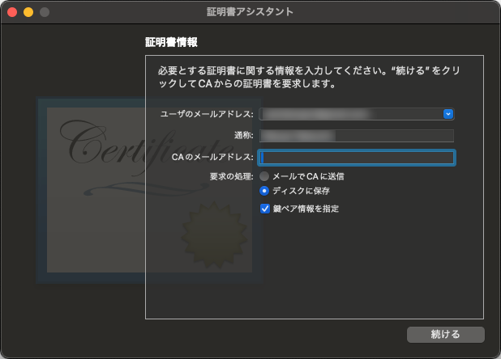

Introduction
Apple Developer Program のサイト内で Certification を作成する手順はネットに散見されるが、Apple Developer Pgoram 側のページが古かったり、クライアント側での作業の際の OS が古すぎて、わかりづらいのでまとめておく。
How to do?
1. CSR (Certificate Signing Request) の作成
キーチェーンを開き、 「キーチェーンアクセス」＞「証明書アシスタント」＞「認証局に証明書を要求」 を実行。

ユーザのメールアドレス には、Apple Developer Program のアカウントに使用しているメールアドレスを指定。鍵ペア情報を指定 にチェックを忘れない。
{kind=link}
{kind=link}
保存先のフォルダを指定。
{kind=link}
鍵ペアの情報を指定。デフォルトのままでよいはずだが、必ず 鍵のサイズ が 2048ビット、アルゴリズム が RSA になっていること。
{kind=link}
先程指定した出力先に CSR ファイルが出力される。
2. Certification の作成
Apple Developer Program のサイトで Cetificates に進む
{kind=link}
ここでは Apple Development を選択。AppStore への公開などの場合は Apple Distribution を選択。
{kind=link}
先程作成した CSR ファイルを選択。
{kind=link}
作成が完了。Download を選択し、CER ファイルをダウンロード。
3. キーチェーンへの登録
ダウンロードした CER ファイルを登録。
{kind=link}
CER ファイルをダブルクリックすることでキーチェーンへの登録処理が始まる。キーチェーン を ログイン に変更すること。
{kind=link}
キーチェーンに登録される。
4. 別端末への CER ファイルのエクスポート (オプション)
CSR ファイルから CER ファイルが作られているため、このままで CSR ファイルを作った端末でしかアプリの発行ができないため、秘密鍵を含めた署名書をファイルに書き出す。
{kind=link}
キーチェーンの ログイン を選択し、上部の 証明書 を選択。
証明書を選択しないと、後述の画面で P12 が選択できないので注意。
書き出したい証明書を右クリックし、 「Apple XXXXXXXX: XXXXX XXXXX (XXXXXXXX) を書き出す…」 を実行。
{kind=link}
フォーマット が 個人情報交換 (.p12) になっていることを確認し、保存先を指定。
{kind=link}
証明書を保護するためのパスワードを指定。
証明書をインポートする際、このパスワードが必要であるため忘れないこと。